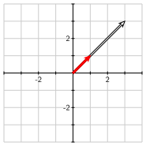

Section4.1An introduction to eigenvalues and eigenvectors
This section introduces the concept of eigenvalues and eigenvectors and offers an example that motivates our interest in them. The point here is to develop an intuitive understanding of eigenvalues and eigenvectors and explain how they can be used to simplify some problems that we have previously encountered. In the rest of this chapter, we will develop this concept into a richer theory and illustrate its use with more meaningful examples.
Preview Activity4.1.1.
Before we introduce the definition of eigenvectors and eigenvalues, it will be helpful to remember some ideas we have seen previously.
Suppose that \(\vvec\) is the vector shown in the figure. Sketch the vector \(2\vvec\) and the vector \(-\vvec\text{.}\)
State the geometric effect that scalar multiplication has on the vector \(\vvec\text{.}\) Then sketch all the vectors of the form \(\lambda \vvec\) where \(\lambda\) is a scalar.
State the geometric effect of the matrix transformation defined by
Use the linearity of matrix multiplication to express the following vectors in terms of \(\vvec_1\) and \(\vvec_2\text{.}\)
\(A(4\vvec_1)\text{.}\)
\(A(\vvec_1 + \vvec_2)\text{.}\)
\(A(4\vvec_1 -3\vvec_2)\text{.}\)
\(A^2\vvec_1\text{.}\)
\(A^2(4\vvec_1 - 3\vvec_2)\text{.}\)
\(A^4\vvec_1\text{.}\)
Subsection4.1.1A few examples
We will now introduce the definition of eigenvalues and eigenvectors and then look at a few simple examples.
Definition4.1.1.
Given a square \(n\times n\) matrix \(A\text{,}\) we say that a nonzero vector \(\vvec\) is an eigenvector of \(A\) if there is a scalar \(\lambda\) such that
The scalar \(\lambda\) is called the eigenvalue associated to the eigenvector \(\vvec\text{.}\)
At first glance, there is a lot going on in this definition so let’s look at an example.
Example4.1.2.
Consider the matrix \(A = \left[\begin{array}{rr}
7 \amp 6 \\
6 \amp -2 \\
\end{array}\right]\) and the vector \(\vvec=\twovec{2}{1}\text{.}\) We find that
In other words, \(A\vvec = 10\vvec\text{,}\) which says that \(\vvec\) is an eigenvector of the matrix \(A\) with associated eigenvalue \(\lambda = 10\text{.}\)
Similarly, if \(\wvec = \twovec{-1}{2}\text{,}\) we find that
Here again, we have \(A\wvec = -5\wvec\) showing that \(\wvec\) is an eigenvector of \(A\) with associated eigenvalue \(\lambda=-5\text{.}\)
Activity4.1.2.
This definition has an important geometric interpretation that we will investigate here.
Suppose that \(\vvec\) is a nonzero vector and that \(\lambda\) is a scalar. What is the geometric relationship between \(\vvec\) and \(\lambda\vvec\text{?}\)
Let’s now consider the eigenvector condition: \(A\vvec = \lambda\vvec\text{.}\) Here we have two vectors, \(\vvec\) and \(A\vvec\text{.}\) If \(A\vvec =
\lambda\vvec\text{,}\) what is the geometric relationship between \(\vvec\) and \(A\vvec\text{?}\)
The sliders in the diagram below allow you to choose a matrix \(A = \begin{bmatrix} a \amp b \\ c \amp d
\end{bmatrix}\text{.}\) The vector \(\vvec\text{,}\) shaded red, may be moved by clicking in the head of the vector. The vector \(A\vvec\) is then shown in outline.
Figure4.1.3.A geometric interpretation of the eigenvalue-eigenvector condition \(A\vvec = \lambda\vvec\) .
Choose the matrix \(A=
\left[\begin{array}{rr}
1\amp 2 \\
2\amp 1 \\
\end{array}\right]
\text{.}\) Move the vector \(\vvec\) so that the eigenvector condition holds. What is the eigenvector \(\vvec\) and what is the associated eigenvalue?
By algebraically computing \(A\vvec\text{,}\) verify that the eigenvector condition holds for the vector \(\vvec\) that you found.
If you multiply the eigenvector \(\vvec\) that you found by \(2\text{,}\) do you still have an eigenvector? If so, what is the associated eigenvalue?
Are you able to find another eigenvector \(\vvec\) that is not a scalar multiple of the first one that you found? If so, what is the eigenvector and what is the associated eigenvalue?
Now consider the matrix \(A = \left[\begin{array}{rr}
2 \amp 1 \\
0 \amp 2 \\
\end{array}\right]
\text{.}\) Use the diagram to describe any eigenvectors and associated eigenvalues.
Finally, consider the matrix \(A = \left[\begin{array}{rr}
0 \amp -1 \\
1 \amp 0 \\
\end{array}\right]
\text{.}\) Use the diagram to describe any eigenvectors and associated eigenvalues. What geometric transformation does this matrix perform on vectors? How does this explain the presence of any eigenvectors?
Let’s consider the ideas we saw in the activity in some more depth. To be an eigenvector of \(A\text{,}\) the vector \(\vvec\) must satisfy \(A\vvec = \lambda\vvec\) for some scalar \(\lambda\text{.}\) This means that \(\vvec\) and \(A\vvec\) are scalar multiples of each other so they must lie on the same line.
Consider now the matrix \(A = \left[\begin{array}{rr}
1 \amp 2 \\
2 \amp 1 \\
\end{array}\right]
\text{.}\) On the left of Figure 4.1.4, we see that \(\vvec=\twovec{1}{0}\) is not an eigenvector of \(A\) since the vectors \(\vvec\) and \(A\vvec\) do not lie on the same line. On the right, however, we see that \(\vvec=\twovec{1}{1}\) is an eigenvector. In fact, \(A\vvec\) is obtained from \(\vvec\) by stretching \(\vvec\) by a factor of \(3\text{.}\) Therefore, \(\vvec\) is an eigenvector of \(A\) with eigenvalue \(\lambda = 3\text{.}\)

Figure4.1.4.On the left, the vector \(\vvec\) is not an eigenvector. On the right, the vector \(\vvec\) is an eigenvector with eigenvalue \(\lambda = 3\text{.}\)
It is not difficult to see that any multiple of \(\twovec{1}{1}\) is also an eigenvector of \(A\) with eigenvalue \(\lambda = 3\text{.}\) Indeed, we will see later that all the eigenvectors associated to a given eigenvalue form a subspace of \(\real^n\text{.}\)
In Figure 4.1.5, we see that \(\vvec=\twovec{-1}{1}\) is also an eigenvector with eigenvalue \(\lambda =-1\text{.}\)
Figure4.1.5.Here we see another eigenvector \(\vvec\) with eigenvalue \(\lambda = -1\text{.}\)
The interactive diagram we used in the activity is meant to convey the fact that the eigenvectors of a matrix \(A\) are special vectors. Most of the time, the vectors \(\vvec\) and \(A\vvec\) appear visually unrelated. For certain vectors, however, \(\vvec\) and \(A\vvec\) line up with one another. Something important is going on when that happens so we call attention to these vectors by calling them eigenvectors. For these vectors, the operation of multiplying by \(A\) reduces to the much simpler operation of scalar multiplying by \(\lambda\text{.}\) The reason eigenvectors are important is because it is extremely convenient to be able to replace matrix multiplication by scalar multiplication.
Subsection4.1.2The usefulness of eigenvalues and eigenvectors
In the next section, we will introduce an algebraic technique for finding the eigenvalues and eigenvectors of a matrix. Before doing that, however, we would like to discuss why eigenvalues and eigenvectors are so useful.
Let’s continue looking at the example \(A = \left[\begin{array}{rr} 1 \amp 2 \\ 2 \amp 1 \\
\end{array}\right] \text{.}\) We have seen that \(\vvec_1 =
\twovec{1}{1}\) is an eigenvector with eigenvalue \(\lambda=3\) and \(\vvec_2=\twovec{-1}{1}\) is an eigenvector with eigenvalue \(\lambda = -1\text{.}\) This means that \(A\vvec_1 = 3\vvec_1\) and \(A\vvec_2=-\vvec_2\text{.}\) By the linearity of matrix multiplication, we can determine what happens when we multiply a linear combination of \(\vvec_1\) and \(\vvec_2\) by \(A\text{:}\)
In other words, multiplying by \(A\) has the effect of stretching a vector \(\xvec\) in the \(\vvec_1\) direction by a factor of \(3\) and flipping \(\xvec\) in \(\vvec_2\) direction.
We can draw an analogy with the more familiar example of the diagonal matrix \(D=\left[\begin{array}{rr}
3 \amp 0 \\
0 \amp -1 \\
\end{array}\right]
\text{.}\) As we have seen, the matrix transformation defined by \(D\) combines a horizontal stretching by a factor of 3 with a reflection across the horizontal axis, as is illustrated in Figure 4.1.6.
Figure4.1.6.The diagonal matrix \(D\) stretches vectors horizontally by a factor of \(3\) and flips vectors vertically.
The matrix \(A=\left[\begin{array}{rr}
1 \amp 2 \\
2 \amp 1 \\
\end{array}\right]\) has a similar effect when viewed in the basis defined by the eigenvectors \(\vvec_1\) and \(\vvec_2\text{,}\) as seen in Figure 4.1.7.
Figure4.1.7.The matrix \(A\) has the same geometric effect as the diagonal matrix \(D\) when expressed in the coordinate system defined by the basis of eigenvectors.
In a sense that will be made precise later, having a set of eigenvectors of \(A\) that forms a basis of \(\real^2\) enables us to think of \(A\) as being equivalent to a diagonal matrix \(D\text{.}\) Of course, as the other examples in the previous activity show, it may not always be possible to form a basis from the eigenvectors of a matrix. For example, the only eigenvectors of the matrix \(\left[\begin{array}{rr} 2 \amp 1 \\ 0 \amp 2
\end{array}\right]\text{,}\) which represents a shear, have the form \(\twovec{x}{0}\text{.}\) In this example, we are not able to create a basis for \(\real^2\) consisting of eigenvectors of the matrix. This is also true for the matrix \(\left[\begin{array}{rr}
0 \amp -1 \\
1 \amp 0 \\
\end{array}\right]
\text{,}\) which represents a \(90^\circ\) rotation.
Activity4.1.3.
Let’s consider an example that illustrates how we can put these ideas to use.
Suppose that we work for a car rental company that has two locations, \(P\) and \(Q\text{.}\) When a customer rents a car at one location, they have the option to return it to either location at the end of the day. After doing some market research, we determine:
80% of the cars rented at location \(P\) are returned to \(P\) and 20% are returned to \(Q\text{.}\)
40% of the cars rented at location \(Q\) are returned to \(Q\) and 60% are returned to \(P\text{.}\)
Suppose that there are 1000 cars at location \(P\) and no cars at location \(Q\) on Monday morning. How many cars are there are locations \(P\) and \(Q\) at the end of the day on Monday?
How many are at locations \(P\) and \(Q\) at end of the day on Tuesday?
If we let \(P_k\) and \(Q_k\) be the number of cars at locations \(P\) and \(Q\text{,}\) respectively, at the end of day \(k\text{,}\) we then have
We can write the vector \(\xvec_k = \twovec{P_k}{Q_k}\) to reflect the number of cars at the two locations at the end of day \(k\text{,}\) which says that
Compute \(A\vvec_1\) and \(A\vvec_2\) to demonstrate that \(\vvec_1\) and \(\vvec_2\) are eigenvectors of \(A\text{.}\) What are the associated eigenvalues \(\lambda_1\) and \(\lambda_2\text{?}\)
We said that 1000 cars are initially at location \(P\) and none at location \(Q\text{.}\) This means that the initial vector describing the number of cars is \(\xvec_0 =
\ctwovec{1000}{0}\text{.}\) Write \(\xvec_0\) as a linear combination of \(\vvec_1\) and \(\vvec_2\text{.}\)
Remember that \(\vvec_1\) and \(\vvec_2\) are eigenvectors of \(A\text{.}\) Use the linearity of matrix multiplication to write the vector \(\xvec_1 =
A\xvec_0\text{,}\) describing the number of cars at the two locations at the end of the first day, as a linear combination of \(\vvec_1\) and \(\vvec_2\text{.}\)
Write the vector \(\xvec_2 = A\xvec_1\) as a linear combination of \(\vvec_1\) and \(\vvec_2\text{.}\) Then write the next few vectors as linear combinations of \(\vvec_1\) and \(\vvec_2\text{:}\)
\(\xvec_3 = A\xvec_2\text{.}\)
\(\xvec_4 = A\xvec_3\text{.}\)
\(\xvec_5 = A\xvec_4\text{.}\)
\(\xvec_6 = A\xvec_5\text{.}\)
What will happen to the number of cars at the two locations after a very long time? Explain how writing \(\xvec_0\) as a linear combination of eigenvectors helps you determine the long-term behavior.
This activity is important and motivates much of our work with eigenvalues and eigenvectors so it’s worth reviewing to make sure we have a clear understanding of the concepts.
This shows that \(\vvec_1\) is an eigenvector of \(A\) with eigenvalue \(\lambda_1 = 1\) and \(\vvec_2\) is an eigenvector of \(A\) with eigenvalue \(\lambda_2=0.2\text{.}\)
By the linearity of matrix matrix multiplication, we have
Therefore, we will write the vector describing the initial distribution of cars \(\xvec_0=\ctwovec{1000}{0}\) as a linear combination of \(\vvec_1\) and \(\vvec_2\text{;}\) that is, \(\xvec_0 =
c_1\vvec_2 + c_2 \vvec_2\text{.}\) To do, we form the augmented matrix and row reduce:
Multiplying a number by \(0.2\) is the same as taking 20% of that number. As each day goes by, the second term is multiplied by \(0.2\) so the coefficient of \(\vvec_2\) in the expression for \(\xvec_k\) will eventually become extremely small. We therefore see that the distribution of cars will stabilize at \(\xvec=250\vvec_1=\twovec{750}{250}\text{.}\)
Notice how our understanding of the eigenvectors of the matrix allows us to replace matrix multiplication with the simpler operation of scalar multiplication. As a result, we can look far into the future without having to repeatedly perform matrix multiplication.
Furthermore, notice how this example relies on the fact that we can express the initial vector \(\xvec_0\) as a linear combination of eigenvectors. For this reason, we would like, when given an \(n\times n\) matrix, to be able to create a basis of \(\real^n\) that consists of its eigenvectors. We will frequently return to this question in later sections.
Question4.1.8.
If \(A\) is an \(n\times n\) matrix, can we form a basis of \(\real^n\) consisting of eigenvectors of \(A\text{?}\)
Subsection4.1.3Summary
We defined an eigenvector of a square matrix \(A\) to be a nonzero vector \(\vvec\) such that \(A\vvec = \lambda\vvec\) for some scalar \(\lambda\text{,}\) which is called the eigenvalue associated to \(\vvec\text{.}\)
If \(\vvec\) is an eigenvector, then matrix multiplication by \(A\) reduces to the simpler operation of scalar multiplication by \(\lambda\text{.}\)
Scalar multiples of an eigenvector are also eigenvectors. In fact, we will see that the eigenvectors associated to an eigenvalue \(\lambda\) form a subspace.
If we can form a basis for \(\real^n\) consisting of eigenvectors of \(A\text{,}\) then \(A\) is, in some sense, equivalent to a diagonal matrix.
Rewriting a vector \(\xvec\) as a linear combination of eigenvectors of \(A\) simplifies the process of repeatedly multiplying \(\xvec\) by \(A\text{.}\)
Show that the vectors \(\vvec_1\text{,}\)\(\vvec_2\text{,}\) and \(\vvec_3\) are eigenvectors of \(A\) and find their associated eigenvalues.
Express the vector \(\xvec = \threevec{0}{-3}{-4}\) as a linear combination of the eigenvectors.
Use this expression to compute \(A\xvec\text{,}\)\(A^2\xvec\text{,}\) and \(A^{-1}\xvec\) as a linear combination of eigenvectors.
3.
Suppose that \(A\) is an \(n\times n\) matrix.
Explain why \(\lambda = 0\) is an eigenvalue of \(A\) if and only if there is a nonzero solution to the homogeneous equation \(A\xvec = 0\text{.}\)
Explain why \(A\) is not invertible if and only if \(\lambda=0\) is an eigenvalue.
If \(\vvec\) is an eigenvector of \(A\) having associated eigenvalue \(\lambda\text{,}\) explain why \(\vvec\) is also an eigenvector of \(A^2\) with associated eigenvalue \(\lambda^2\text{.}\)
If \(A\) is invertible and \(\vvec\) is eigenvector of \(A\) having associated eigenvalue \(\lambda\text{,}\) explain why \(\vvec\) is also an eigenvector of \(A^{-1}\) with associated eigenvalue \(\lambda^{-1}\text{.}\)
The matrix \(A=\
\left[\begin{array}{rr}
1 \amp 2 \\
2 \amp 1 \\
\end{array}\right]\) has eigenvectors \(\vvec_1=\twovec{1}{1}\) and \(\vvec_2=\twovec{-1}{1}\) and associated eigenvalues \(\lambda_1
= 3\) and \(\lambda=-1\text{.}\) What are some eigenvectors and associated eigenvalues for \(A^5\text{?}\)
4.
Suppose that \(A\) is a matrix with eigenvectors \(\vvec_1\) and \(\vvec_2\) and eigenvalues \(\lambda_1 =
-1\) and \(\lambda_2=2\) as shown in Figure 4.1.9.
Figure4.1.9.The vectors \(\vvec_1\) and \(\vvec_2\) are eigenvectors of \(A\text{.}\)
Sketch the vectors \(A\xvec\text{,}\)\(A^2\xvec\text{,}\) and \(A^{-1}\xvec\text{.}\)
5.
For the following matrices, find the eigenvectors and associated eigenvalues by thinking geometrically about the corresponding matrix transformation.
For each of the following matrix transformations, describe the eigenvalues and eigenvectors of the corresponding matrix \(A\text{.}\)
A reflection in \(\real^2\) in the line \(y=x\text{.}\)
A \(180^\circ\) rotation in \(\real^2\text{.}\)
A \(180^\circ\) rotation in \(\real^3\) about the \(y\)-axis.
A \(90^\circ\) rotation in \(\real^3\) about the \(x\)-axis.
10.
Suppose we have two species, \(P\) and \(Q\text{,}\) where species \(P\) preys on \(Q\text{.}\) Their populations, in millions, in year \(k\) are denoted by \(P_k\) and \(Q_k\) and satisfy
Show that \(\vvec_1=\twovec{1}{3}\) and \(\vvec_2=\twovec{2}{1}\) are eigenvectors of \(A\) and find their associated eigenvalues.
Suppose that the initial populations are described by the vector \(\xvec_0 = \twovec{38}{44}\text{.}\) Express \(\xvec_0\) as a linear combination of \(\vvec_1\) and \(\vvec_2\text{.}\)
Find the populations after one year, two years, and three years by writing the vectors \(\xvec_1\text{,}\)\(\xvec_2\text{,}\) and \(\xvec_3\) as linear combinations of \(\vvec_1\) and \(\vvec_2\text{.}\)
What is the general form for \(\xvec_k\text{?}\)
After a very long time, what is the ratio of \(P_k\) to \(Q_k\text{?}\)